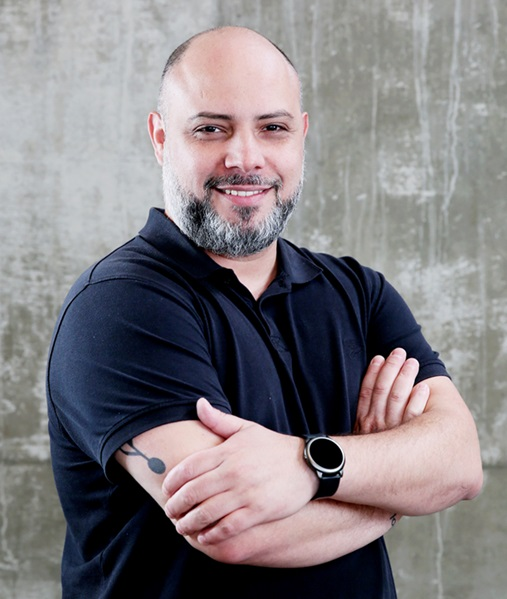

Cloud & Delivery
CI/CD, cloud application development, systems architecture and service delivery.
Based in Auckland, New Zealand
I'm Bruno, a Systems Analyst focused on cloud, automation and reliable IT operations. I connect technical delivery with real business needs.

I'm currently pursuing a Master of Information Technology, specialising in Continuous Integration/Continuous Deployment and Cloud Application Development.
My background combines hands-on technical delivery with process thinking. I have implemented internal systems, supported business-critical platforms, improved access and network environments, and worked across technical and operational teams.
A practical toolkit built across systems delivery, infrastructure and business support.
CI/CD, cloud application development, systems architecture and service delivery.
System implementation, requirements gathering, testing, incident monitoring and user support.
Network segmentation, access control, user authentication and workplace technology.
Operational reporting, MySQL queries, documentation and cross-functional collaboration.
Selected examples drawn from my professional experience.
Infrastructure & security
Configured VLANs, authentication and segmented access while managing file structures and permissions across SharePoint and Google Drive.
Business systems
Mapped business needs, configured internal platforms and supported testing to keep technical delivery aligned with day-to-day operations.
ERP & reporting
Contributed to ERP and fleet-management solutions, producing MySQL queries and reports and supporting users across business workflows.
A progression from hands-on support to systems analysis and operational delivery.
Cinefilme Produções · Brazil
Sattin Administração e Participações · Brazil
Luft Solutions · Brazil
H. Strattner & Cia. Ltda · Brazil
FUNAP · Brazil
Auckland Institute of Studies · New Zealand
Focus on CI/CD, cloud application development, systems architecture and IT service delivery. Expected completion: August 2026.
Universidade Nove de Julho · Brazil
Systems analysis, network management and applied business technology.
I'm open to IT and systems opportunities in New Zealand. If my experience fits what your team needs, I'd be glad to talk.